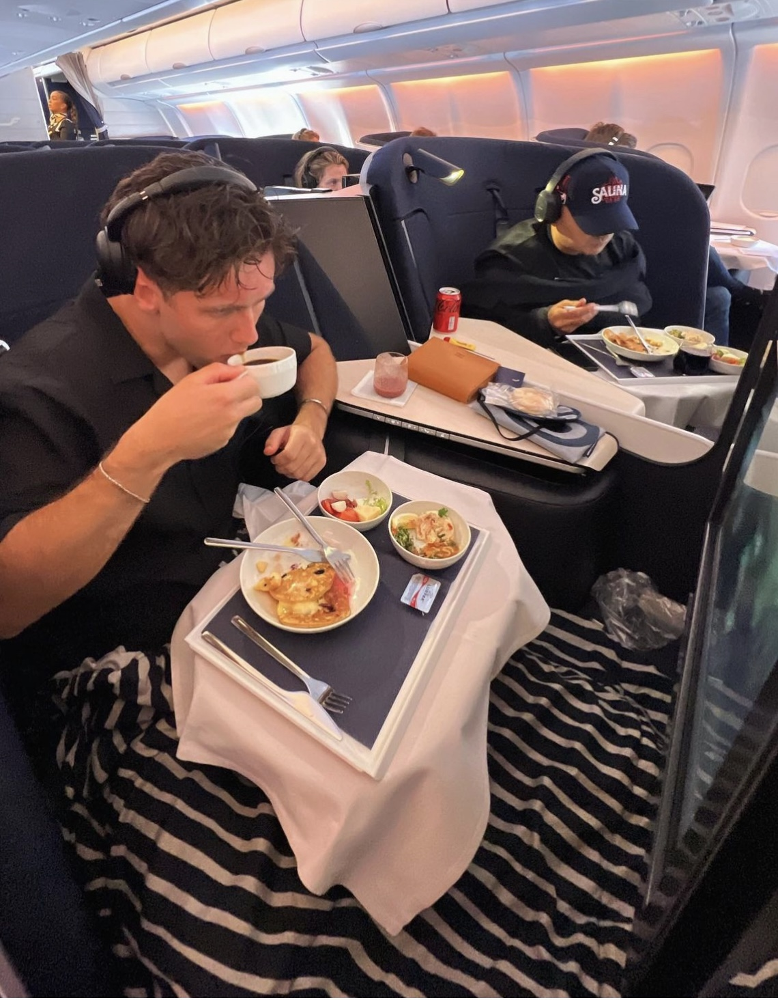

Lidt om Benjamin:
Benjamin er en 23-årig studerende, der netop er startet på multimediedesign, et uddannelsesforløb med en varighed på to år. Med en baggrund præget af sportslige aktiviteter, især ishockey, har han udviklet disciplin og teamwork, som han bringer med sig i sit studie og hverdag. Han bor i dag på Østerbro, men har tidligere boet i den smukke by Lugano, hvilket har givet ham et internationalt perspektiv. Familien betyder meget for ham, og han sætter stor pris på at tilbringe tid sammen med både venner og familie. Han har desuden to brødre, som han har et tæt forhold til. Benjamin har inden studiestart haft mulighed for at rejse en del, blandt andet med sine venner, som også kan ses på billedet nedenfor.
